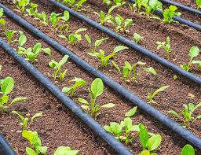
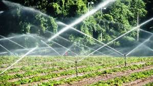
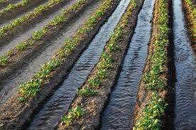

Irrigation plays a vital role in Jordan's agriculture due to limited water resources and dry climate. Jordan is one of the world's most water-scarce countries, which makes modern, efficient irrigation methods critical for sustainable agriculture.
Over the years, irrigation systems have shifted from traditional surface irrigation to advanced technologies like drip and sprinkler irrigation, significantly improving water use efficiency and crop productivity.

This is the most common irrigation system in Jordan due to its high water efficiency.

Used for large areas, cereal crops, and pastures.

One of the oldest irrigation systems, still used in some regions.